Outside the lab
Personal
Away from the computer: time on the bike and on the trail, a stack of books, and usually something in the oven.
Baking
Cakes, pies, cookies, and the occasional kitchen experiment. A few recent bakes:

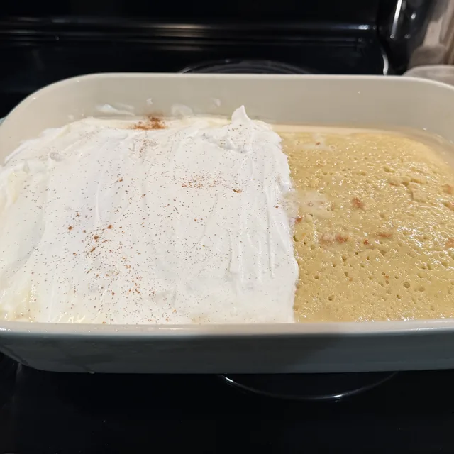

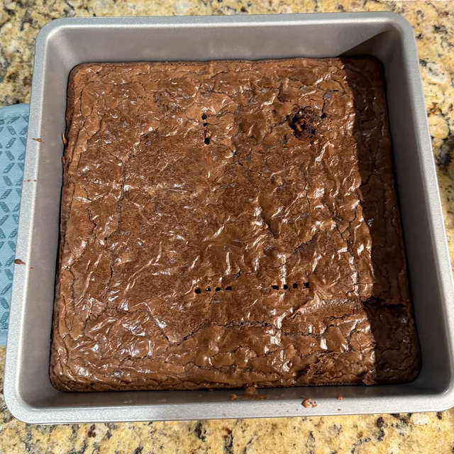

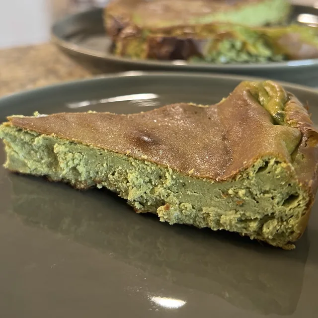

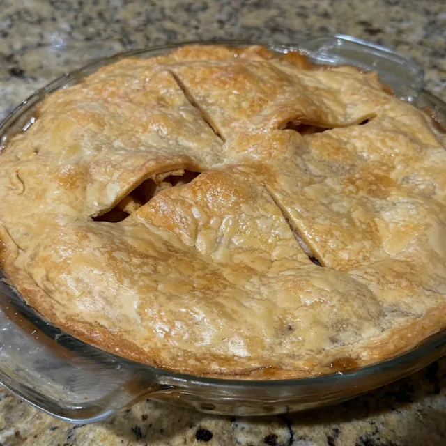

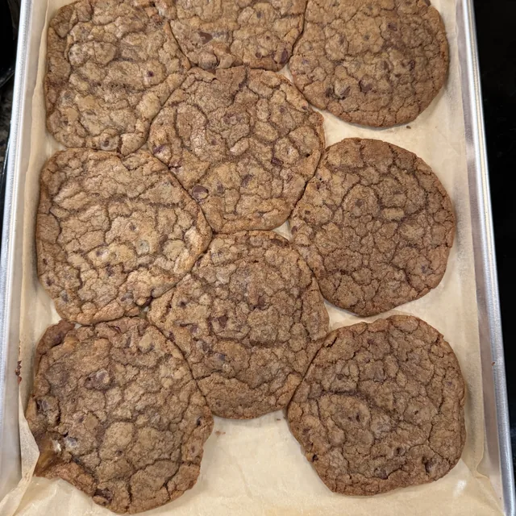
Cycling & hiking
Rides and trails around the Bay Area, plus indoor training on a Wahoo trainer.

ElevationDrag along the profile to follow the ride

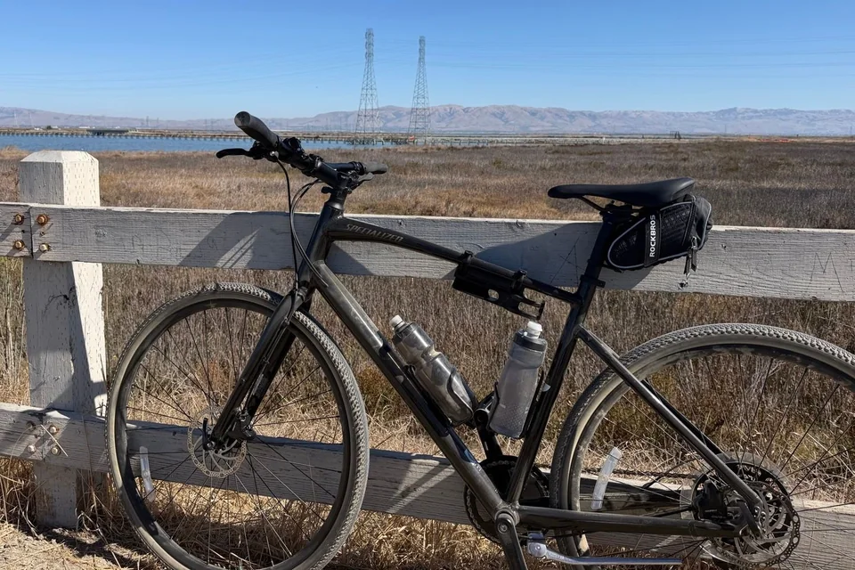
- Distance
- 47.9 km 29.7 mi
- Moving time
- 2 h 11 min
- Average speed
- 21.9 km/h 13.6 mph
- Elevation gain
- 62 m 202 ft
Cooking
I love food! I’m always exploring new cuisines in the kitchen. A few recent dishes:


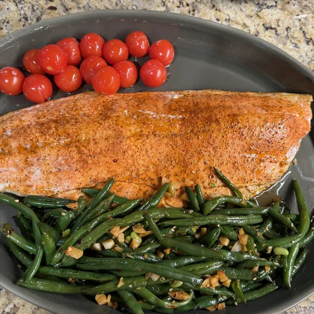

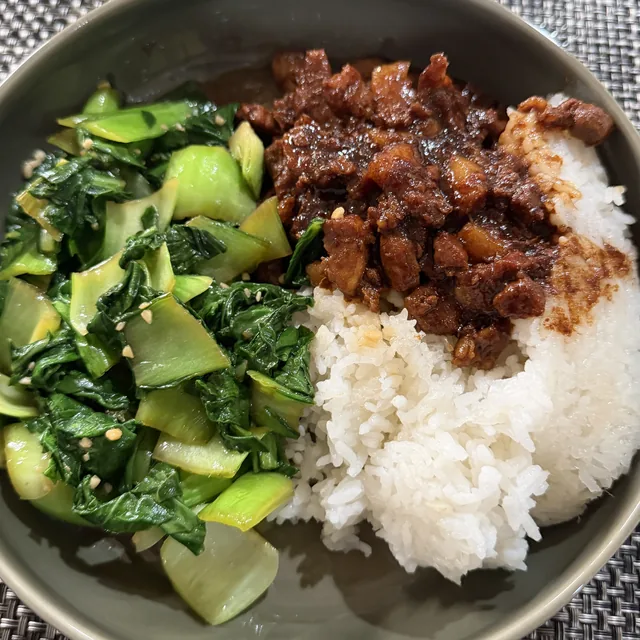

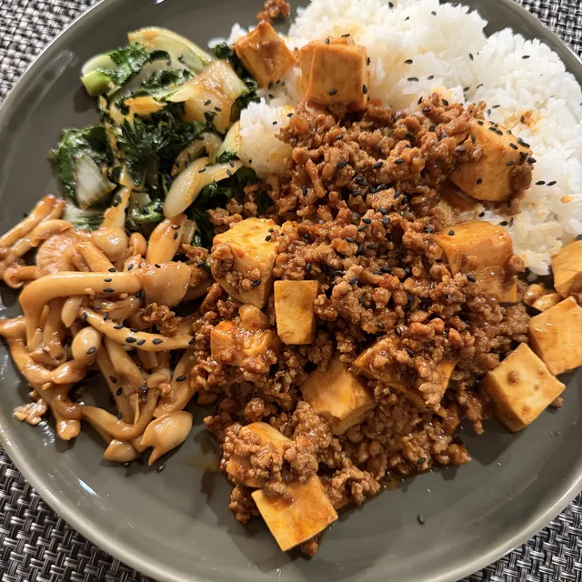

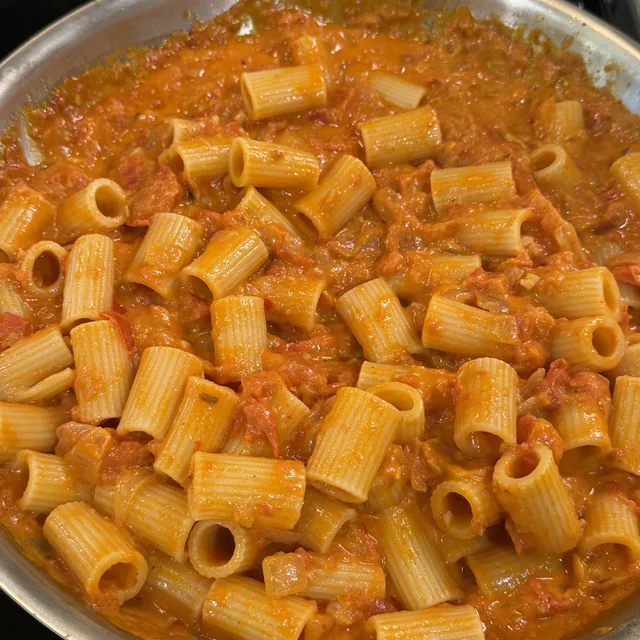

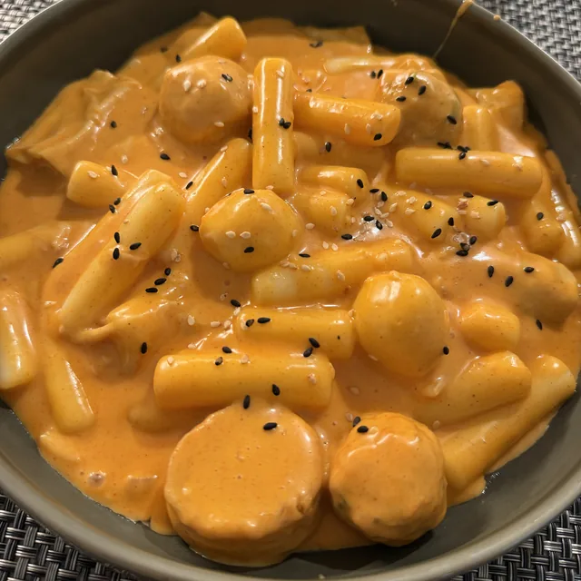

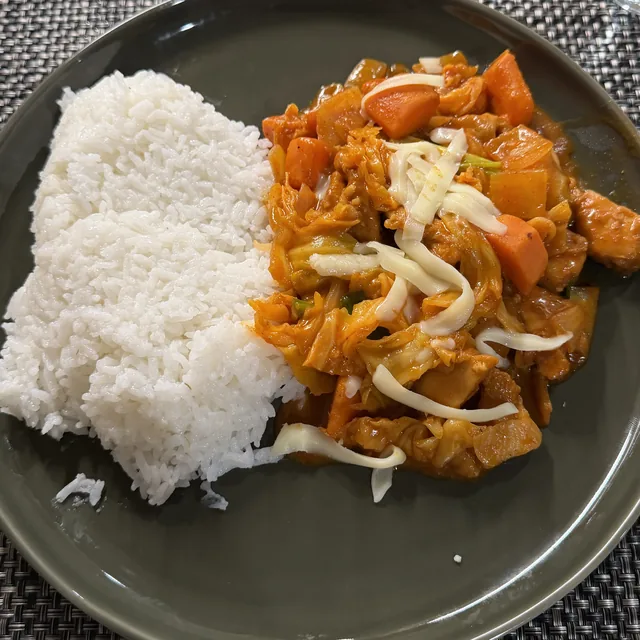

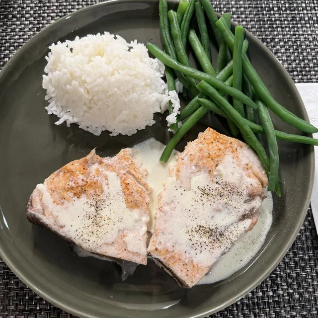

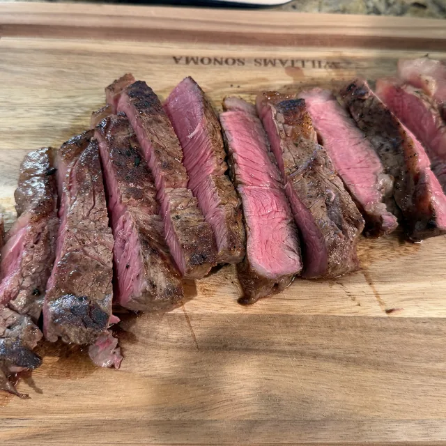

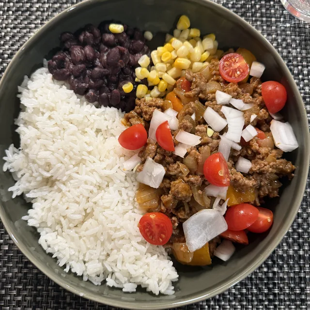

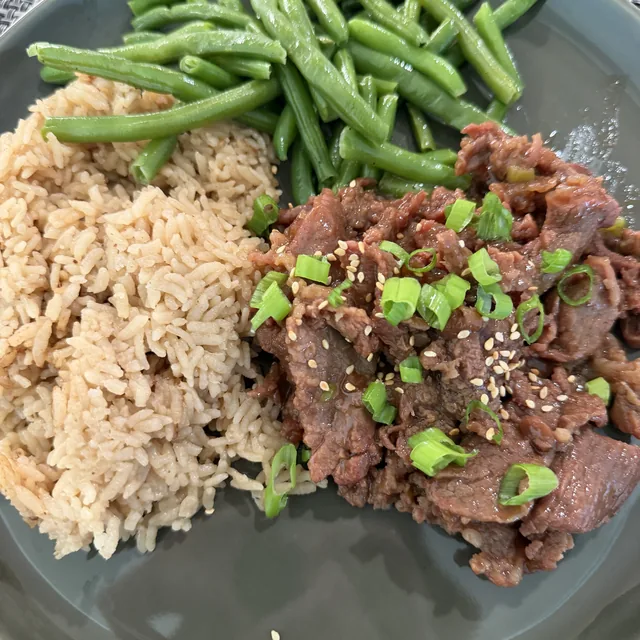

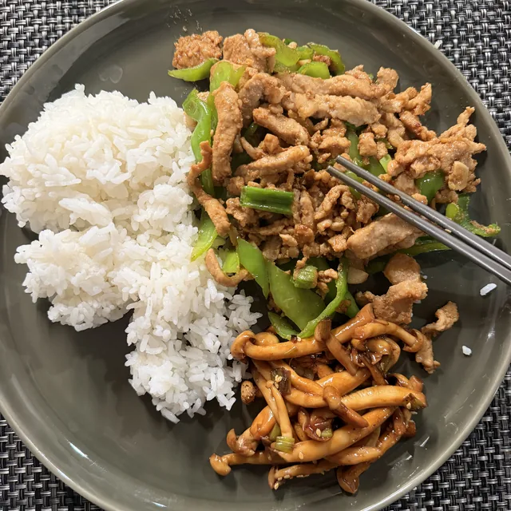
More dishes (6)Fewer dishes

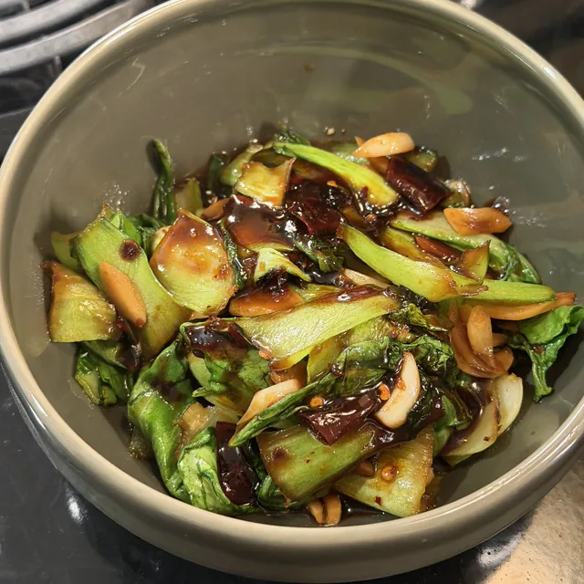

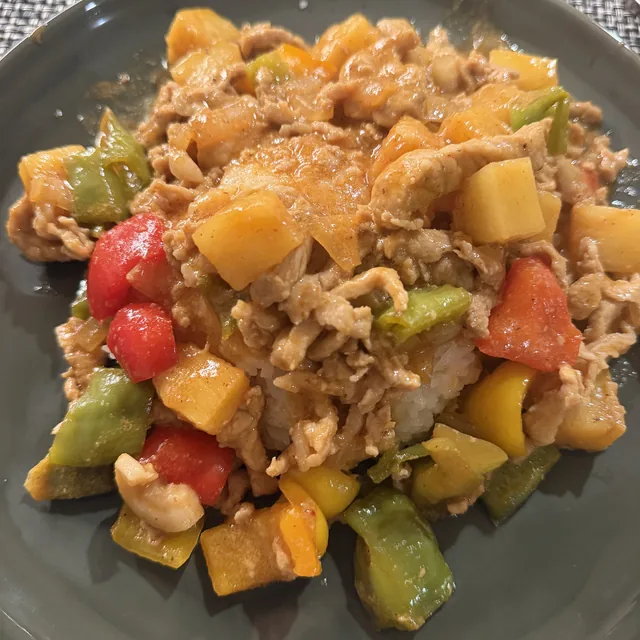

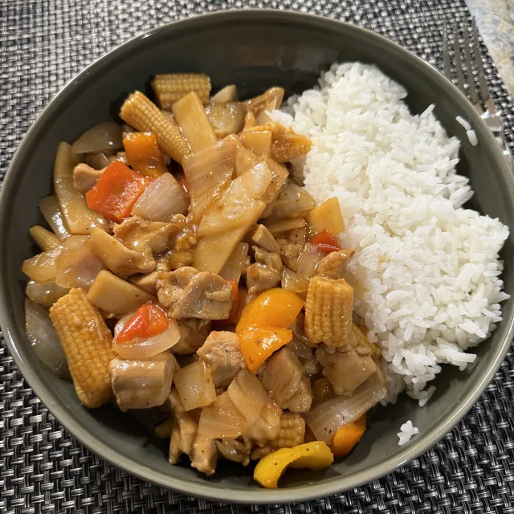

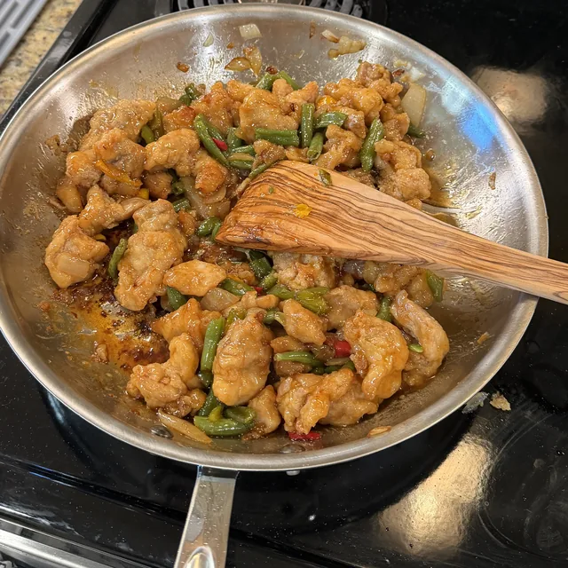

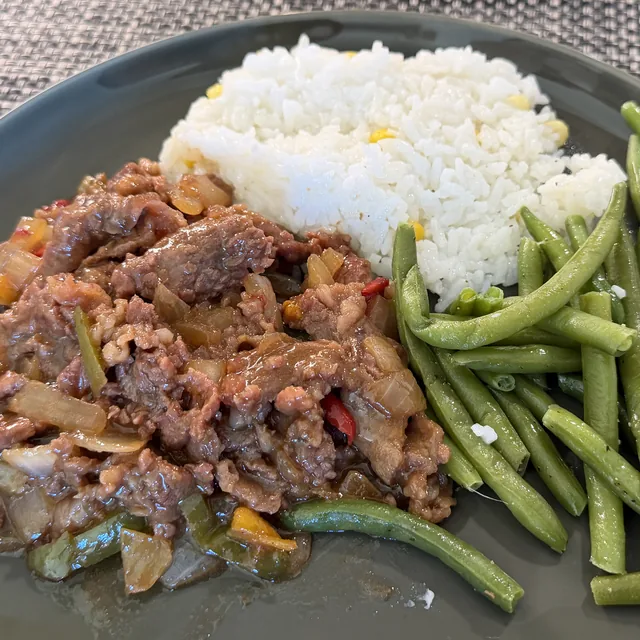

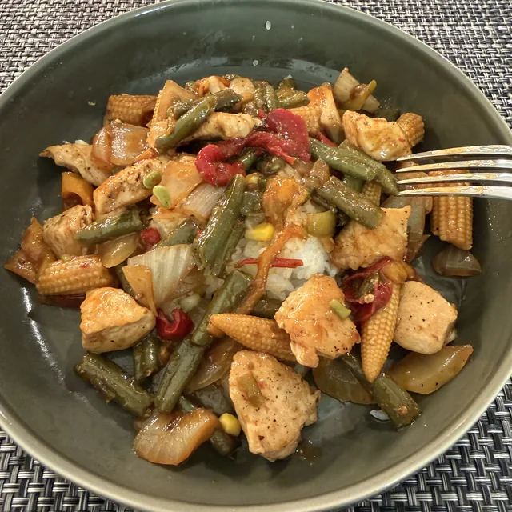
Reading
A short, occasionally updated list of books I’ve enjoyed, inside and outside science.
Side projects
Small tools and experiments. Code lives on GitHub.